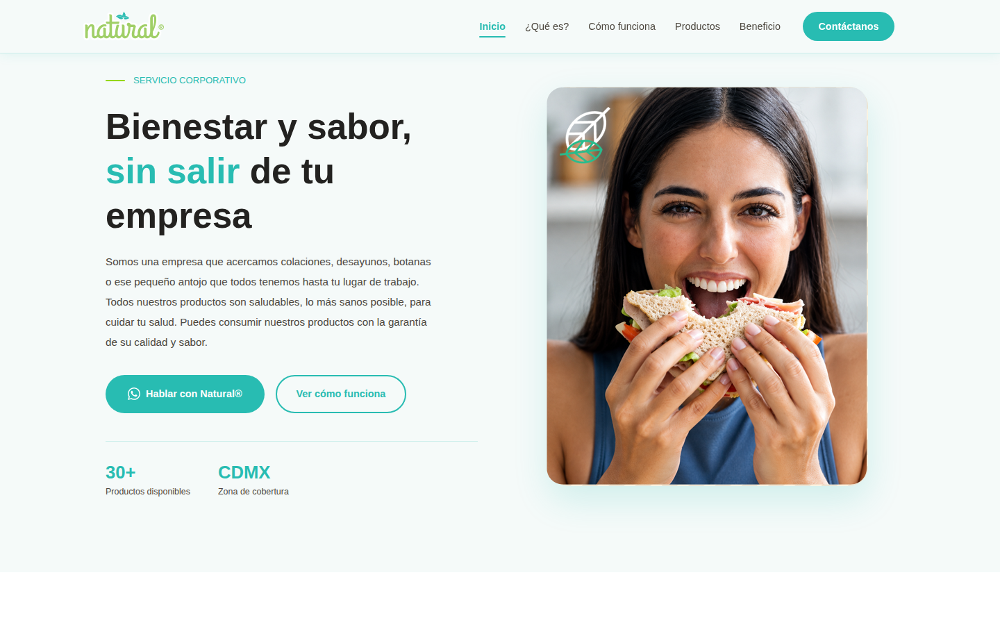
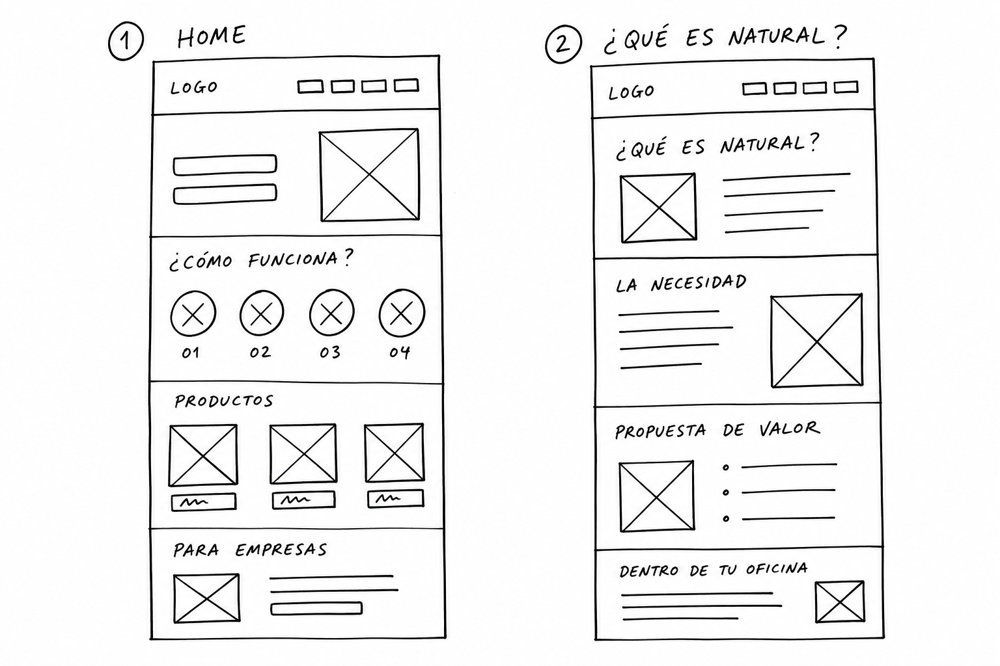
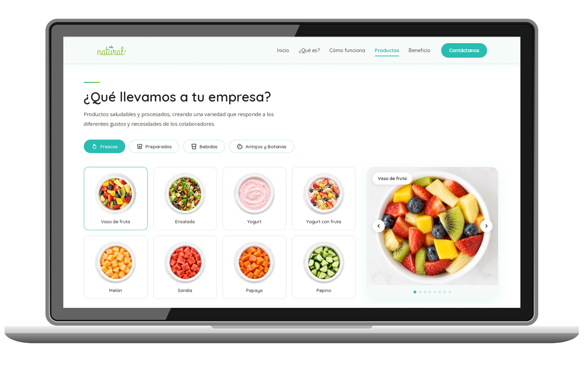
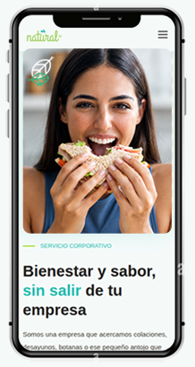

Eliminando la fricción de descarga y aumentando las probabilidades de que el mensaje llegue y se lea.

Natural® es un servicio de alimentación que acerca comida, bebidas y snacks directamente a las personas dentro de su lugar de trabajo — y no contaba con una sola página en internet.
Un carrito recorre oficinas en Ciudad de México ofreciendo tortas, fruta, botanas y bebidas para que los colaboradores no tengan que salir a la calle en su jornada. Toda su comunicación vivía dentro de una presentación de 14 páginas que se enviaba por WhatsApp o correo, esperando que alguien tuviera el tiempo de abrirla, descargarla y leerla completa.
El reto fue construir, desde cero, una experiencia web capaz de explicar con claridad qué es Natural®, cómo funciona y qué ofrece — tanto a los colaboradores que reciben el servicio como a las empresas que lo contratan. A partir de la información, la propuesta de valor y los materiales de comunicación existentes, desarrollé una propuesta conceptual de sitio web que trasladara la esencia de Natural® al entorno digital.
Antes de diseñar una sola pantalla me hice tres preguntas que definieron todo lo que vino después.
Con eso decidido, una cosa quedó clara desde el inicio: el sitio sería 100% informativo, sin carrito de compras ni sistema de pedidos. Natural® vende con presencia física dentro de las instalaciones — el sitio solo tenía que conseguir la llamada.
Pero el responsable de RH no es la única persona que llega a este sitio. La experiencia tenía que responder a dos tipos de visitante con preguntas distintas en la cabeza: el colaborador que va a recibir el servicio todos los días, y la empresa que necesita justificar la decisión de contratarlo. Una misma página, dos conversaciones.
Antes de trabajar con imágenes, color y tipografía, definí la jerarquía del contenido.
Los wireframes en baja resolución me permitieron comprobar la distribución de la información, establecer prioridades y definir la posición de los principales llamados a la acción. En esta etapa el objetivo no era resolver la estética, sino entender cómo debía funcionar cada pantalla y cómo se relacionaban unas con otras — qué necesitaba estar arriba del scroll, qué podía esperar, y en qué punto exacto tenía sentido pedirle al visitante que escribiera por WhatsApp.

La interfaz necesitaba mantener coherencia a lo largo de toda la experiencia.
Diseñé en Figma el Design System completo del proyecto — componentes, tipografía, paleta y patrones de composición — y a partir de ahí construí la interfaz en alta fidelidad de cada sección: navegación, botones, tarjetas y bloques de contenido reutilizables para mantener consistencia entre las diferentes secciones y facilitar la evolución de la propuesta. Más que diseñar cada pantalla de manera independiente, busqué que todas formaran parte de un mismo sistema.
Una presentación impresa se lee de principio a fin. Una página web se escanea. Ese cambio de paradigma definió toda la arquitectura.
Elegí una sola página con scroll continuo, no un sitio de múltiples secciones, por tres razones concretas: el responsable de RH llega desde WhatsApp en su celular, así que cada clic extra es una oportunidad de que abandone; el contenido es lineal y persuasivo — sigue una narrativa de problema → solución → prueba → acción; y Natural® no tiene un catálogo lo bastante complejo como para justificar navegación profunda.
Cada sección de esa página responde, en orden, la siguiente pregunta que el responsable de RH se está haciendo en su cabeza: ¿qué es esto? → ¿puedo confiar en ellos? → ¿cómo funcionaría en mi empresa? → ¿qué ofrecen exactamente? → ¿vale la pena? → ¿cómo los contacto? Ninguna sección existe porque "se veía bien" — cada una está ahí porque cierra una duda específica antes de que se convierta en un motivo para cerrar la pestaña.
El escenario más común no es alguien sentado frente a su computadora comparando proveedores.
Ese contexto de uso — celular, poco tiempo, atención dividida — es la razón por la que el botón de WhatsApp aparece desde el primer scroll y no solo al final: algunos responsables de RH ya saben lo que buscan y no necesitan leer todo el sitio para escribir. Para quien sí lee todo, el mismo botón reaparece al cierre, como consecuencia natural de la narrativa, no como una repetición forzada.
Mi primer planteamiento ponía el foco donde parecía obvio: los alimentos preparados, la fruta, las botanas.
Era apetitoso. También era el error. Un responsable de facilities no contrata Natural® porque la comida se vea bien en una foto — la contrata porque resuelve un problema logístico y de bienestar dentro de su empresa. Hablarle de comida en el primer scroll era hablarle al colaborador equivocado.
Ese cambio de perspectiva — del producto al beneficio — fue el punto de inflexión de todo el proyecto. Los productos siguen ahí, con su propia sección más adelante.


La propuesta es responsiva para desktop, tablet y móvil. El CTA principal conecta directo con WhatsApp — el canal de contacto real del negocio. En un escenario de implementación, Natural® tendría por primera vez una presencia digital que puede compartirse con un solo link y que sigue comunicando incluso cuando nadie está escribiendo desde el negocio.
Natural® necesitaba un medio para comunicar de manera rápida y convertir la curiosidad en una llamada. Diseñar para un negocio pequeño con ambiciones grandes exige el mismo rigor que un producto digital complejo, solo que aplicado a un problema mucho más concreto.
También confirmé algo que ya sospechaba: la arquitectura de información es diseño. Antes de elegir un color o una tipografía, entender quién lee, qué busca y qué lo frena sigue siendo la decisión más importante de todo el proyecto.
Y, sobre todo, quedó claro que Natural® es una propuesta de doble beneficio: una solución que favorece tanto a los colaboradores que reciben el servicio como a la empresa que lo otorga — ese equilibrio fue, en el fondo, el hilo conductor de todo el proyecto.